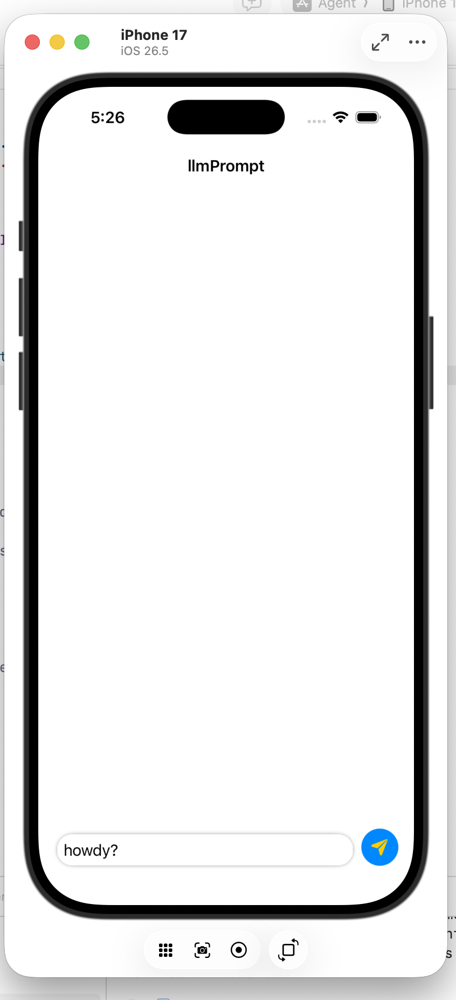
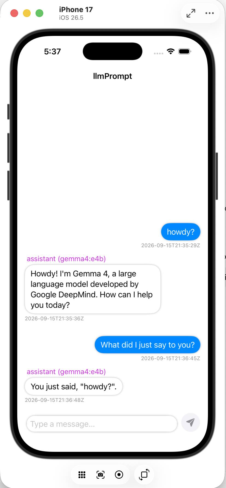
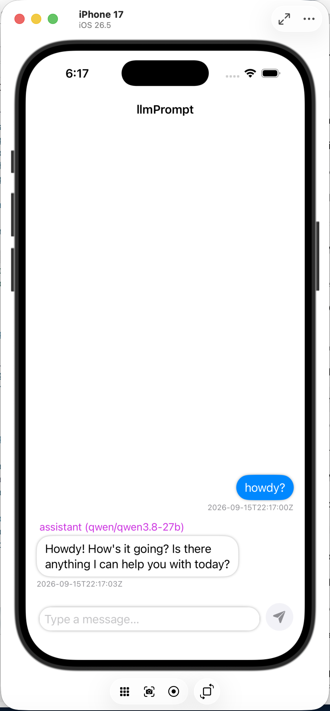
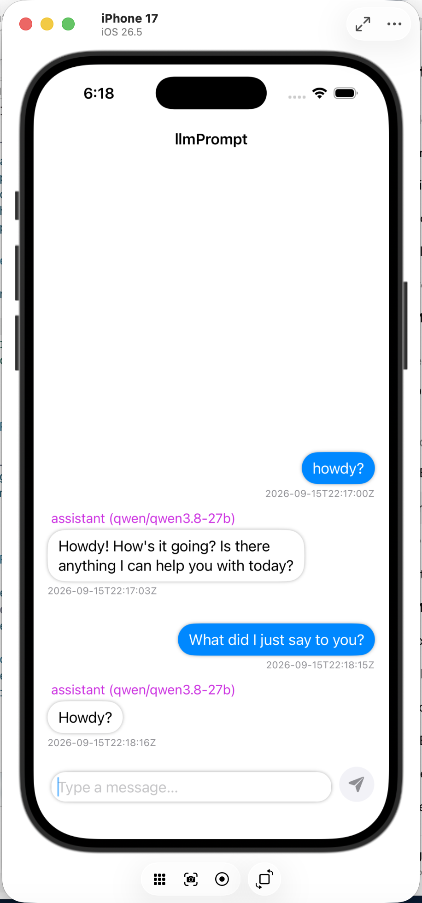

A native iOS app that talks to a server I built and run myself, which routes messages to a language model, streams the answer back word by word, and now remembers what was already said. The interesting part isn't the app, it's everything that happens in between.
The foundation for a system I'm still actively building on, not a finished chatbot.
On the surface this is simple: type a message on an iPhone, get a reply from an AI model. But I didn't want the app talking directly to an AI company's servers. Instead, the message travels to a server I own and run, which decides which model should answer, sends the request along, and streams the response back into the app as it's being written, not all at once at the end.
That middle piece, my own server sitting between the app and the AI, is the actual project. I'm calling it my AI Harness because it's infrastructure I plan to keep extending: more capable routing, tools, memory, and eventually more complex mobile AI workflows all get built on top of this same foundation.
Click through each step below to see where the message is at that moment and why that step exists.
The easy version of this project would have the iPhone app talk straight to an AI provider. I didn't build it that way, on purpose. A phone app is something anyone can pull apart, so it should never hold private keys or make permanent decisions about which AI model to use. Instead, all of that lives on my server, in one place I control.
The credentials needed to call an AI provider live only on my server. The app never sees them, so there's nothing sensitive to extract even if someone took the app apart.
Which AI model answers, what happens if one fails, how a future feature like memory or tools would work, all of that can change on the server without touching or resubmitting the iPhone app.
The app is the interface. The server is the control layer underneath it.
My server is a small Python program. I built it to be asynchronous, meaning it doesn't sit and wait around while an AI model is thinking. It can start one request, immediately move on to handle something else, and come back when the model has something to say. That matters because AI responses can take a few seconds, and a server that just freezes during that time would be a bad building block for anything more advanced later.
Three pieces work together here, each doing one job:
In plain terms: Starlette decides what my server does with a request. Granian is the part that's actually listening for that request in the first place. Splitting those two things apart is a standard pattern in real backend systems, and it's the first time I built something that way instead of running one script that did everything itself.
An AI model doesn't produce its whole answer instantly, it generates it piece by piece. My server doesn't wait for the whole thing to finish before sending anything back. As soon as the model produces a small chunk of text, the server forwards that chunk straight to the app, which is why the reply appears to type itself onto the screen instead of showing up all at once.
Send the message, then wait, with nothing on screen, until the entire answer has been generated somewhere else and finally arrives all at once.
Words start appearing within a second. The full answer takes the same amount of time to finish generating, but it never feels like the app is stuck doing nothing.
Under the hood, this uses a technique called Server-Sent Events: my server keeps the connection to the app open and pushes small pieces of text down it one at a time, instead of closing the connection after a single reply the way a normal web request would.
My server isn't locked to one single AI provider. It keeps a list of models it's allowed to use and picks one for each request. If that provider is slow, unavailable, or returns an error, the server can try the next one on the list instead of just failing outright. The app never has to know or care which one actually generated the answer.
I actually watched this happen while testing: the app asked for one specific model, but by the time the server had picked a provider and something answered, the reply came back identifying itself as a completely different model. That's the whole point, the app's job is to have a conversation, not to babysit which AI is behind the curtain that day.
If a provider is rate-limited or down, the server checks and moves to the next option rather than assuming the first attempt always works. Only if nothing is available does it tell the app so honestly, instead of pretending it succeeded.
Because the app only ever talks to my server, not to a specific AI company, I can add, remove, or replace models behind the scenes at any time without changing a single line of the iPhone app.
My server has its own address on the internet and only accepts encrypted connections, so no one sitting in between can read what's being sent. While building and testing this, I had to set up that encryption myself, which meant the app and the server had to be introduced to each other and agree to trust one another before any conversation could happen.
That taught me something I didn't expect going in: "just turn on HTTPS" isn't a single switch, it's an actual trust relationship between a device, a certificate, and a server, and every piece of that chain has to be set up correctly for it to work at all.
I didn't want to have to manually start this server every time I wanted to use the app. So instead of running it as a script in a terminal window, I set it up as a proper background service on the cloud machine it lives on. That means it starts automatically whenever the machine boots, and if it ever crashes, it restarts itself instead of just staying down.
That's a small change on paper, but it's the difference between "a script I run when I remember to" and "a service that's actually available." It's the same expectation any real product would need to meet.
Everything up to this point could send a prompt and stream back an answer, but every request was independent. The model had no idea what had been asked five seconds earlier. If I wanted the app to feel like an actual conversation instead of a series of one-off questions, I had to solve a different problem: how do you build context around a model that has none of its own?
Without context
With context
Language models don't automatically know what happened earlier in a conversation. Every time I wanted a coherent back-and-forth, I had to explicitly send the prior turns back to the model along with the new message. The question stopped being "how do I call an LLM" and became "how do I reconstruct a conversation for a model that forgets it the instant it answers."
The app still just sends a message. All of the new work happens on the server: it identifies which app is asking, looks up what that app's conversation has said so far, hands the model the full history instead of a single line, and saves the new exchange once it's done. The app never has to manage any of this itself.
Watch what actually gets sent to the model as a conversation grows. Each turn you add here gets appended to the request payload, the same way it happens on the server.
Nothing sent yet. Click the button to start the conversation.
The model never "remembered" the first message on its own. The trick is that the full history gets sent back to it every single time, and that history has to live somewhere between requests since the model itself keeps none of it.
My server isn't only ever going to talk to one app. That means it can't just pull "the most recent conversation" out of the database. Every stored turn is tagged with an app identifier (the iOS app's bundle ID), and the server only loads turns that match the app making the current request before it builds the context to send the model.
It's a small field doing an important job. Without it, one shared table of stored turns would turn into one shared, tangled conversation. With it, the same backend and the same database can hold as many separate conversations as there are apps talking to it, and each one only ever sees its own history.
These are real screenshots from the simulator, not mockups. Both runs ask the same follow-up question, "what did I just say," after a first message, using two completely different models behind the same backend.

Before: no conversation yet

After: "You just said, 'howdy?'"

First message, answered by qwen3.8-27b

Follow-up sent to the same conversation
Because the app never talks to a provider directly, swapping which model answered a given conversation doesn't change anything about how that conversation's memory is stored or retrieved. The context layer sits below the model, not inside it.
Because conversation history has to live somewhere between one request and the next. The model doesn't hold onto it, so something persistent has to.
Because the backend is shared. Without a way to separate conversations, one app's history could bleed into another's.
Because a model generates its answer piece by piece. Streaming lets the app show those pieces as they're produced instead of waiting on all of them.
Because provider credentials, routing decisions, and now conversation storage shouldn't live inside a mobile app that anyone can take apart.
Because the server shouldn't sit idle waiting on one model to finish generating while a second request is trying to come in.
Because a server that only runs while a terminal window happens to be open isn't a server the app can actually depend on.
llmPrompt proved I could connect an app to an LLM. llmChat turned that connection into a system that could hold an actual conversation.
The app's whole job is showing a conversation and reacting to typing. Every decision about credentials, which model answers, and what happens if something fails belongs on the server. Keeping that boundary clean made both halves easier to reason about.
A reply isn't one thing that arrives, it's a sequence of small pieces arriving over time. The app has to be built to update itself as new pieces show up, not to wait for a single finished answer.
Encryption, the actual web server, my application code, and the way requests get routed all solve separate problems that stack on top of each other. Understanding where one layer's job ends and the next one's begins made debugging far less mysterious.
Getting code to run on my laptop and keeping a service reliably available on a machine I don't touch every day turned out to be two very different skills.
Right now the system can securely move a message from a native app, through my own server, to an AI model, and stream the answer back. That's deliberately the simplest possible version of a much bigger idea. I'm continuing to build on this same backend as I explore giving it tools to use, longer memory of a conversation, and more capable mobile AI experiences.
The system can securely move a message from a native app to my own server to a model and back, stream that answer in as it's generated, and remember the conversation it's part of. Everything below is what I'm actively building toward next on top of the same foundation.
The system spans a native SwiftUI client, a Python backend, SQLite persistence, model routing, and SSE streaming. I wrote the client, the server, the conversation storage, and the routing logic myself, with the AI providers handling only the actual language generation.